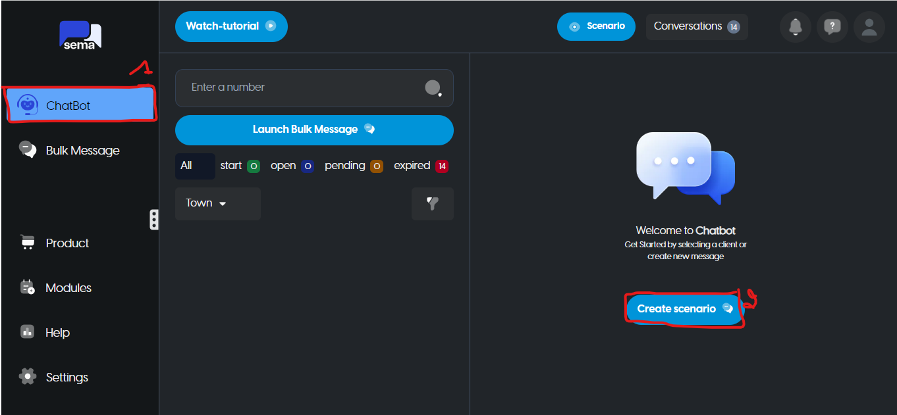
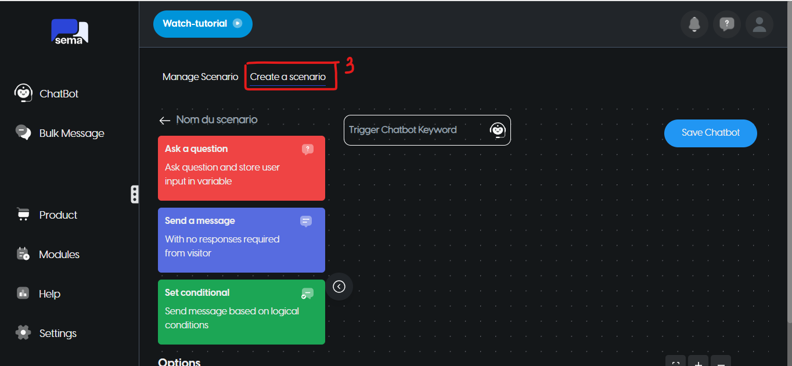
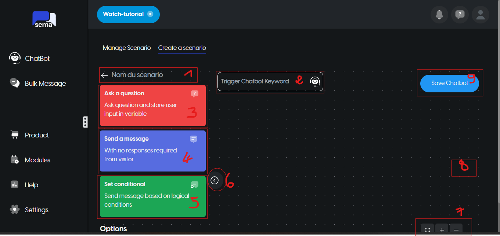

Cliquez sur le bouton bleu qui dit « Create scenario »

Vous pouvez soit choisir un modèle si votre idée de chatbot est similaire en cliquant sur la section Manage Scenario.
Cependant, si vous souhaitez repartir de zéro, vous pouvez également le faire dans la section Create a scenario.

Comment construire un chatbot ?
Fondamentalement, nous aurons simplement besoin de glisser-déposer, de remplir les données et de cliquer sur Save chatbot. Vous pouvez suivre les étapes ci-dessous :
Entrez le Nom du scenario dans l’espace Nom du scenario
Entrez le mot clé qui activera votre scenario dans l’espace Trigger Chatbot Keyword
Cliquez sur Ask a question au forum si vous souhaitez l’utiliser
Cliquez sur Send a message sur le forum si vous souhaitez l’utiliser
Cliquez sur Set conditionnal sur le tableau si vous souhaitez l’utiliser
Cliquez sur le bouton “<” pour agrandir la carte (masquer les options du nœud)
Suivez la séquence, c’est : zoomer, dézoomer, mettre au pourcentage normal, et au centre, verrouiller/déverrouiller le zoom avec la souris.
Fenêtre flottante : vous aide à voir globalement le chatbot.
Cliquez sur le bouton bleu Save chatbot pour enregistrer le chatbot

Types de nœuds Chatbot
Il existe 3 types de nœuds de chatbot :
Envoyer un message => Sans réponse requise de la part des visiteurs
Le reste du contenu de cette documentation n'est pas encore disponible
mais pour plus d'information, veillez nous contacter sur support@sem-a.com
Comment construire un chatbot sur Sema?
Comment créer un nouveau chatbot ?
Accédez à votre tableau de bord Sema
Cliquez sur Chatbots dans le menu à gauche
Cliquez sur le bouton bleu qui dit « Create scenario »
Manage Scenario. Cependant, si vous souhaitez repartir de zéro, vous pouvez également le faire dans la sectionCreate a scenario.Comment construire un chatbot ?
Fondamentalement, nous aurons simplement besoin de glisser-déposer, de remplir les données et de cliquer sur
Save chatbot. Vous pouvez suivre les étapes ci-dessous :Entrez le Nom du scenario dans l’espace
Nom du scenarioEntrez le mot clé qui activera votre scenario dans l’espace
Trigger Chatbot KeywordCliquez sur
Ask a questionau forum si vous souhaitez l’utiliserCliquez sur
Send a messagesur le forum si vous souhaitez l’utiliserCliquez sur
Set conditionnalsur le tableau si vous souhaitez l’utiliserCliquez sur le bouton “<” pour agrandir la carte (masquer les options du nœud)
Suivez la séquence, c’est : zoomer, dézoomer, mettre au pourcentage normal, et au centre, verrouiller/déverrouiller le zoom avec la souris.
Fenêtre flottante : vous aide à voir globalement le chatbot.
Cliquez sur le bouton bleu
Save chatbotpour enregistrer le chatbotTypes de nœuds Chatbot
Il existe 3 types de nœuds de chatbot :